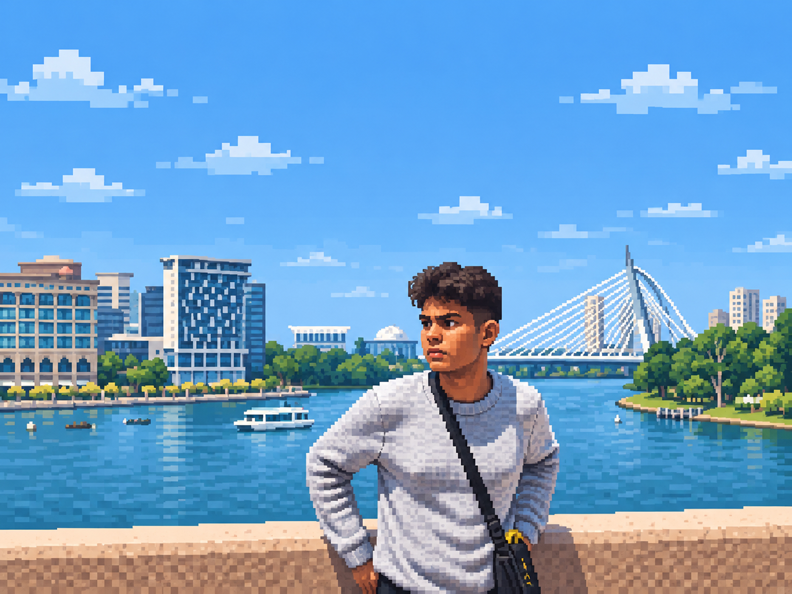
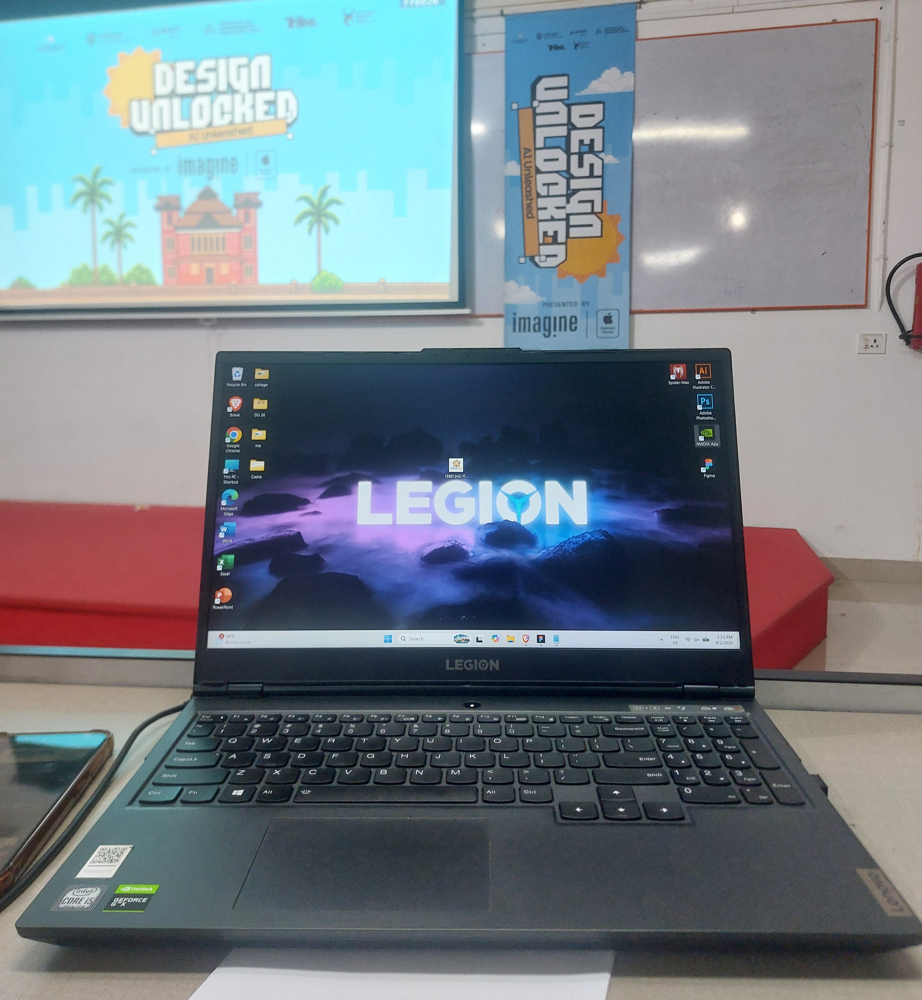
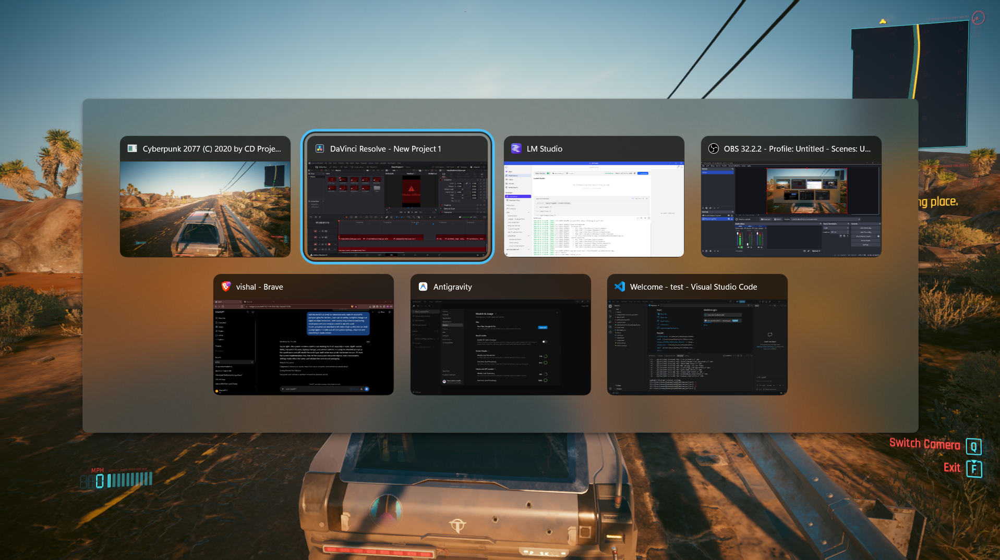

＋
Look closer.
Start with what people actually do, not the assumption that arrived first.
Active observation · Deep field listening
Less guessing · Better questions
*-*
I turn curiosity into projects that make everyday life easier, bring people together, and open up new ways of seeing the world.
A useful product can still have personality. A beautiful interface can still respect people's time. I’m interested in both sides of that sentence.

Thats me.. HI !!

Prototypes, interactions, and physical-digital tools.

Testing ideas by building them with precision.
Not a fixed formula. More like four useful instincts to return to when the answer is not obvious.
Find the tiny friction, strange pattern, or untold story hiding in plain sight.
A few traits that show up in how I learn, make decisions, collaborate, and Complete things.
Start with what people actually do, not the assumption that arrived first.
Follow the strange reference. The best connection is often one step outside the obvious category.
I would rather test a small, imperfect idea than debate a perfect one that does not exist yet.
The last few details decide whether something merely works or feels considered and human.
This is how the path goes...
Marketing Officer at CATALYST IDEC ,Move between design, code, visual storytelling
Computer Scince & Engineering... Build with others, share the version, Build Precise.
Keeping the parts that taught me something.
I move between visual design, code, storytelling, and systems. Click any tool to pop up its capabilities and vector mark.
Pretty good at it - Ui-Ux,posters,arts,designs throw me anything...take back whats Precise
Photo manipulation ,typography styling, color grading, visual moodboards, and tactile art direction.
Mathematical vector geometry, identity logomarks, bespoke typography, bezier curve crafting, and scalable iconography.
Motion graphics ,visual effects and animations, spatial 3D cameras, motion tracking.
coding, generative art, interactive experiences,HTML/CSS prototyping, algorithmic visuals, and AI-assisted vibe coding
arge language models (LLMs), prompt engineering, AI-assisted workflows, generative AI, AI agents, context engineering, multimodal AI, model orchestration, intelligent automation, and rapid AI prototyping.
Have a problem worth pulling apart, a half-formed idea, or a project that needs a thoughtful collaborator?
Start a conversation ↗